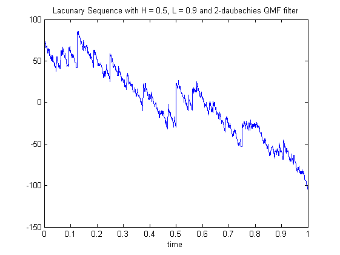

| FRACLAB Functions |
|
Generates a the discrete wavelet transform of which is a lacunary sequence
LAC = lacunary(N,H,L,QMF)
LAC = lacunary(N,H,L,QMF) Generates the process, LAC, using a sample size, N, a Holder exponent, H, a Lacunary coefficient, L, and a quadrature mirror filter QMF. The parameter N is a positive integer, the parameters H and L are reals in (0,1).
|
At each scale j, 2^L(j) coefficients are chosen randomly and their value is set to 2^-j*H, the others being 0, independently at each scale. |
N = 1024; H = 0.5; L = 0.9; t = linspace(0,1,N);
QMF = MakeQMF('daubechies',2);
lac = lacunary(N,H,L,QMF);
figure; plot(t,lac);
title('Process with Lacunary Wavelet H = 0.5, L = 0.9 and 2-daubechies filter');
xlabel('time')

| |
lacunarity | lepskiiap | |